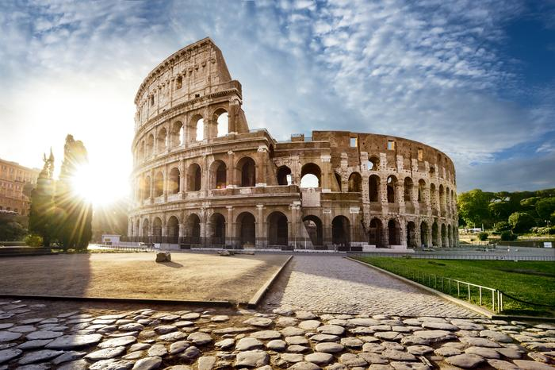
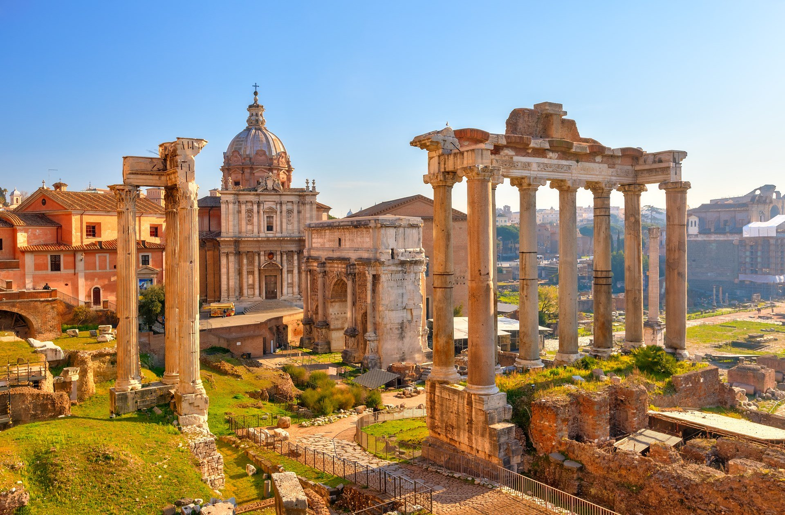

Styl Starożytnego Rzymu
W czasach starożytnego Rzymu architekci rzymscy wymyślili takie budowle jak amfiteatry, bazyliki, świątynie zakończone kopułami, łuki triumfalne. Budowano też wtedy długie i kamienne drogi i akwedukty. Najbardziej znanym amfiteatrem zbudowanym w starożytnym Rzymie jest
Koloseum, które codziennie przyciąga tysiące zwiedzających.

Również imponujący jest ten fragment świątyni i łuk triumfalny za nim, stojące niedaleko Koloseum.
